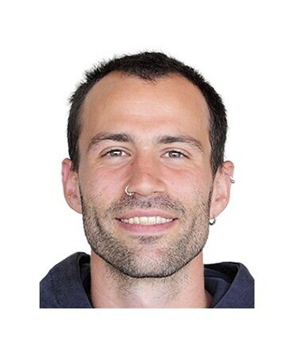
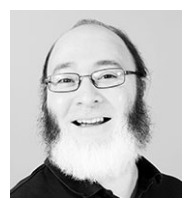

Erarbeitung der wissenschaftlichen Grundlagen, Modelldesign, Implementierung und Validierung.

Softwarearchitektur und Programmierung, Webdesign und -realisierung, Betrieb des Webservices und Wartung der Webapplikation.

Das Bundesamt für Umwelt (BAFU) unterstützt die Entwicklung und den Betrieb des Modells.